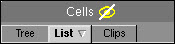

To access: Located on the left side of the Layout Viewer Window.
Use the Cells Browser to view and navigate cells in a layout based on a tree or list view.
The Cells Browser includes three different palettes that are all accessible from tabs in the Cells Browser. The different tabs and description are provided in Table 1.
Tab |
Description |
|---|---|
Tree |
Displays a hierarchical view of the components in the current layout as shown in Figure 1. Popup menu items allow you to open, rename, delete, flatten, and save the selected component. |
List |
Displays an alphabetized list view of the components in the current layout as shown in Figure 1. Popup menu items allow you to open, rename, delete, flatten, and save the selected component. |
Clips |
Displays any clips you load from a clips file or create using the Clips button. Refer to “Clips Palette” for more information. |
You can click the name of a cell in the tree or list view to display the cell in the layout viewing area. The arrows in the tabs allow you to sort the cells in ascending or descending order. The number displayed in parenthesis identifies the number of placements of a component.
The text box (located immediately below the tabs) displays the name of the currently selected cell. You can enter strings in this text box to search for cells, which is useful when working with large designs. You can press the Tab key to auto-complete the name, and then press Enter to display the cell in the layout viewing area.
The tree and list view each have an associated popup menu that contains options for manipulating the selected cell. The contents of this popup menu vary depending on the status of the currently opened file and the selected cell. Figure 2 shows all possible options available in the popup menu when the layout is opened in edit mode, the selected cell is referenced by other cells, and the selected cell contains a hierarchy.
Field |
Description |
|---|---|
Open |
Opens the selected cell in the layout viewing area. |
Rename |
Displays the Rename cell dialog box allowing you to rename the selected cell. This menu item is not available when the layout view is in readonly mode. |
Delete |
Displays the Delete Cell dialog box allowing you to delete the selected cell or select the cell to delete from the dropdown list. This menu item is not available when the layout view is in readonly mode. |
Flatten |
Displays the Flatten Cell dialog box prompting you to verify flattening the selected cell. This menu item is not available when the layout view is in readonly mode or when the selected cell does not contain hierarchy. |
Save as layout |
Displays the Export Cell as Layout dialog box. Refer to the “Export Layout Dialog Box” for information on the fields in this dialog box. This menu item is not available when the layout view is in readonly mode. |
Hide/Show References |
Hides or shows references to the selected cell in the layout viewing area. This menu item toggles between Hide References and Show References depending on the current state of the selected cell. This menu item is not available when the layout view is in readonly mode, or when there are no references to the selected cell. |
Expand/Collapse cell |
Expands or collapses the selected cell. These fields do not display in the popup menu if the selected cell contains no hierarchy. |
Hide Cell |
Hides the selected cell from the Tree or List view. The Cells tab updates and displays a hidden icon indicating there are hidden cells.  Click the icon to display the Show/Hide Cells in Palette dialog box. Cells hidden in the Tree view are automatically hidden in the List view and vice versa. |
Scan References |
Invokes Calibre RVE and checks references to the selected cell. The menu item is not available when there are no references to the selected cell. |